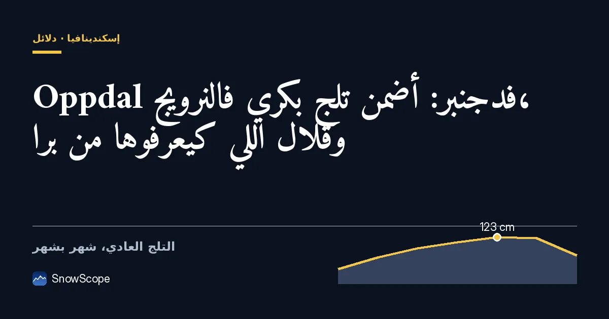
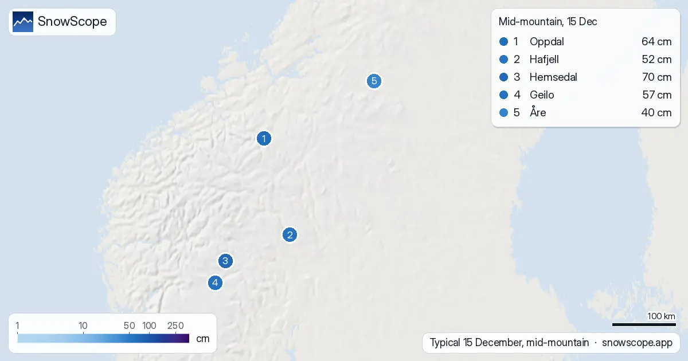

Oppdal فدجنبر: أضمن تلج بكري فالنرويج، وقلال اللي كيعرفوها من برا
Oppdal مكيتّة فـ واد بارد وقاحة اللي التلج كيبقى فيه. فـ يوم 15 ديسمبر، السنة عادي تجيب 60 سم فـ القاعدة (585 م)، و93 بالمية ديال الشتوات اللي فاتو كيبقى فيهم 30 سم أولا أكثر هناك قبل لميلاد بشوي. شنو بزاف السياح الأجانب ماكيعرفوش على هاد المحطة ديال الوسط، بس فيها أكيد التلج الجديد فـ أول الموسم فـ القاعدة ديال كايين فـ النرويج.
شوف توقعات التلج مباشرة ديال Oppdal فالتطبيق ديال SnowScopeالعلو ديال التلج، التنبيهات والخريطة 3D، فابور.
علاش القاعدة كتبقى بيضاء واخرين ماكيبقاو
بين Dovrefjell و Trondheim، Oppdal مكيتّة فـ واد بارد وقاحة اللي التلج كيبقى فيه أكثر من المحطات الأخرى اللي قريبة. 41 كم ديال البيسطات و15 ليفت كيمدّو من 585 م إلى 1327 م، بس اللي خاص فـ ديسمبر هنا هو إن البيسطات ديال المبتدئين والعايلات فـ القاعدة كيبقى فيها تلج قريب بحال فـ الفوقانية.
فـ يوم 15 ديسمبر، العلو ديال التلج هو 60 سم فـ القاعدة، 64 سم فـ الوسط (956 م) و72 سم فـ الفوقانية (1327 م). هاد الحاجة اللي قريبة بزاف هي نادرة فـ النرويج.


الأرقام اللي خاصة فـ ديسمبر
فـ الأسبوع 15-21 ديسمبر، 93 بالمية ديال الشتوات اللي فاتو كان فيهم 30 سم أولا أكثر فـ القاعدة. فـ الوسط كيطلع إلى 96 بالمية، و98 بالمية فـ الفوقانية. أسبوع الميلاد (22-28 ديسمبر) أكثر أمان: 96 بالمية فـ القاعدة، 98 بالمية فـ الوسط والفوقانية.
حتى سنة ضعيفة (1 من 10 شتوات) كتبقى فيها 30 سم فـ القاعدة و40 سم فـ الوسط فـ يوم 15 ديسمبر. إذاً التلج الخفيف هو نادر هنا فـ نص الشتا.
أيام قصار، الهوا بارد
ديسمبر هنا شمال بزاف معناه إنك كتعطيك ساعات ضوء قليلة. الشمس كتطلع متأخرة وكتغرب بدري، إذاً خطط باش تتزلج من أول شي وتوقع دي ليك يوم قصير فـ الجبل. البرد كيبقى دائم فـ واد قاحة، إذاً جيب لبسة بزاف وقفازات دافيين.
الحاجة الحسنة: هاد البرد القاحة كيخلي التلج الطري وثابت، شنو مزيان لكايين المستويات والبيسطات المختلفة.
الاتّجاه على المدة الطويلة
على مدة 46 شتوة، تلج ديسمبر فـ Oppdal تبدّل. القاعدة كانت معدّلة 71 سم فـ النص الأول ديال المدة بس نزلت إلى 46 سم فـ آخر 15 شتوة. الشتا اللي فاتت (2025-26) كان فيها 38 سم فـ الثلاثة ديال الأماكن فـ يوم 15 ديسمبر: بقاع كافية باش تتزلج، بس تحت المعدّل القديم.
هاد الضعف كيعكس نموذج أوسع فـ المنطقة، إذاً جيب بدري واختار التواريخ قبل أسبوع الميلاد الكبير إذا كنت بغيت أمان أكثر.
Oppdal مقابل Trysil: وين كتحط رهانك على تلج أول الموسم
Trysil أكبر وأشهر: 101 كم ديال البيسطات و40 ليفت. بس فـ ديسمبر، قاعدتها (407 م) ضعيفة. فـ يوم 15 ديسمبر عادي، قاعدة Trysil فيها 26 سم و52 بالمية بقاع من الشتوات كان فيهم 30 سم فـ الأسبوع 15-21 ديسمبر. الوسط ديالها (44 سم، 83 بالمية) والفوقانية (60 سم، 89 بالمية) متين، بس بقاع تحت Oppdal.
إذا الجماعة ديالك فيها مبتدئين أولا بغيتي تتزلج البيسطات السفلية فـ ديسمبر مع أمان عالي، Oppdal هي الرهان الأحسن.
علاش كتحجز وعلاش كتولي
Oppdal مكيتّة على السكة ديال Oslo-Trondheim و الطريق الكبيرة، إذاً كتولي فيها بلا ما تقطع جبال طويلة فـ وقت الشتا السيء. تذاكير الليفت كتستعمل سعر ديناميكي حسب التاريخ فـ الكتاب الإلكتروني ديال المحطة؛ فـ يوم 13 نونبر 2026 ما كان هناك سعر ثابت واضح فـ الصفحة الرسمية ديالهم.
القاعدة بسيطة: اشري أنلاين بدري، واختار التواريخ برّا عطل الميلاد باش تقلّل الثمن وتجنّب الزحمة.
نصايح للي كيتزلجو
- العايلات اللي فيها صغار كيتزلجو: اختار التواريخ فـ أول أولا آخر ديسمبر واستعمل الليفتات ديال القاعدة؛ البيسطات السفلية ديال Oppdal كتبقى مغطاة فـ 93 بالمية ديال الشتوات نص الشهر.
- احجز تذكرة الليفت أنلاين بوقت قبل واختار أسبوع قبل أسبوع الميلاد باش تخفّض الثمن وتلقى بيسطات هادية.
- ابدأ يومك مع أول ليفت؛ الضلام كيجي بدري بزاف هنا شمال فـ ديسمبر.
- جيب قفازات ثقيلة ولبسة بزاف؛ الواديان القاحة كتكون باردة كثر من باقي الجبال.
- قبل ما تزلج برّا البيسطات المحددة فـ منطقة Dovrefjell، شد شوف النشرة الرسمية ديال الانهيارات النرويجية فـ varsom.no.
على هاد الأرقام
العلو ديال التلج فالمحطات هو أكثر تلج فالجهة الفوقانية فالتاريخ المكتوب؛ هادو تقديرات لمنطقة، ماشي قياس فنقطة وحدة. التوقعات يمكن تتبدل. ديما شوف النشرة الرسمية ديال الانهيارات قبل ما تخرج من البيست.
النشرات الرسمية ديال الانهيارات: Varsom (NVE)
كيفاش تستاشهد بهاد المقال
للبحث، التعليم ولا الصحافة: الأرقام والرسومات تقدر تعاود تخدم بيهم بحرية تحت CC BY 4.0 مع هاد الاستشهاد.
SnowScope (2026), Oppdal فدجنبر: أضمن تلج بكري فالنرويج، وقلال اللي كيعرفوها من برا, https://snowscope.app/blog/ar/2026/11/oppdal-december-skiing-snow-reliable-norway.html, تشاف ف 2026-11-14
SnowScope (Atlas Labs). (2026, November 14). Oppdal فدجنبر: أضمن تلج بكري فالنرويج، وقلال اللي كيعرفوها من برا. SnowScope snow reports. https://snowscope.app/blog/ar/2026/11/oppdal-december-skiing-snow-reliable-norway.html
BibTeX
@misc{snowscope2026oppdaldecemberskiingsnow,
author = {{SnowScope (Atlas Labs)}},
title = {Oppdal فدجنبر: أضمن تلج بكري فالنرويج، وقلال اللي كيعرفوها من برا},
year = {2026},
month = nov,
howpublished = {\url{https://snowscope.app/blog/ar/2026/11/oppdal-december-skiing-snow-reliable-norway.html}},
note = {Published 2026-11-14 13:44 UTC; accessed 2026-11-14}
}· CC BY 4.0 · الطريقة، الداتا والأدوات →
Oppdal: التلج والحرارة حسب العلو، هاد الشتا مقارنة مع اللي فاتت (الأدوات) →
تابع Oppdal
فابور: ميساج ملي يجي التلج، والتوقعات كل صباح.